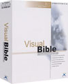
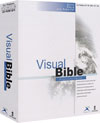
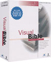

- 다양한 성서 역본 (스탠다드 15종, 프로페셔널 35종, 스칼라 41종)
- 웨스트민스터 신학대학 히브리어 문법 분해(파싱) (스칼라 에디션)
- Robinson-Pierpont의 최신 신약 헬라어 문법 분해(파싱) (스칼라 에디션)
- 파싱과 원어 입력기까지 지원하는 원전분해 전문 검색기 (스칼라 에디션)
- 신구약 히브리어/헬라어 인라인(in-line) 원전분해와 스트롱 사전 (프로페셔널 이상)
- 외부에서 입수한 성경을 볼 수 있게 해 주는 사용자 역본 기능 (프로페셔널 이상)
- 텍스트(가로) 및 테이블(세로) 형식의 성경 대조 기능 (모든 에디션)
- 인터넷 목회 지원 (프로페셔널 이상)
- 영한대역 메튜 헨리 주석 및 영문 웨슬리 주석 (모든 에디션)
- 헬라어 LXX 포함 4개 역본 대조 외경 (모든 에디션)
- 사용자가 직접 주석을 작성할 수 있게 해 주는 개인 주석 (모든 에디션)
- 초보자도 편리한 하이퍼 텍스트 기능 (모든 에디션)
- ISBE 성경 백과 사전 (모든 에디션)
- 한글 성경 사전, 이스턴 성경 사전, 및 히치코크 인명 사전 (모든 에디션)
- 인터넷 연계 기능 (모든 에디션)
- 컴퓨터 그래픽 성서 지도 (모든 에디션)
- 평신도를 위한 QT 매니저 (모든 에디션)
- 찬송가 전곡 검색 및 연주 (모든 에디션)
| 내용 및 기능 | Standard | Professional | Scholar |
|---|---|---|---|
| 총 성서역본수 | 15종 | 35종 | 41종 |
| 한글성서 | 5종 (개역한글, 개역한자, 공동번역, 표준새번역, 개역한글침례표기) |
6종 (현대인의 성경 추가) |
6종 |
| 영문성서 | 9종 (KJV, KJV Strong, ASV, YLT, Darby, BBE, Webster, WEB, ISV신약) |
13종 (NIV, Douay, Weimouth신약, LXX영문 추가) |
13종 |
| 기타 외국어성서 | × | 11종 (중국어 간체, 프랑스어 LSG, 독일어 SCH, LUT, ELB, 이태리어 LND, 스페인어 SRV, 러시아어 RST, 스웨덴어 SWE, 인도네시아어 ITB, BIS) |
11종 |
| 원어성서 | 1종 (Latin Vulgate) |
5종 (BHS, LXX, TR Stephanus, Byzantine 추가) |
11종 (BHS자음, BHS자음M, TR Scrivener, TR with Strong, Westcott Hort, Tischendorf 추가) |
| 사용자 역본 | × | × | 10종 (NASB, NKJV, RSV, NRSV, Nestle-Aland 27th 외 5종) |
| 정통관주 · 영한대역 메튜헨리주석 · 영문 웨슬리 주석 · 개인주석 · 한글 성경사전 · ISBE 성경 백과사전 · 이스턴 성경사전 · 히치코크 인명사전 · 역본에 대한 성구사전 70여종 · 고품위 성서지도 · QT 매니저 · 찬송가 전곡 연주,검색 · 유틸리티 및 부가 Data | ○ | ○ | ○ |
| 설교매니저 · 인터넷 목회 기능 · 신구약 원전분해 · 영한대역 스트롱코드 사전 | × | ○ | ○ |
| 히브리어/헬라어 문법분해(파싱) · 파싱 포함 원전분해 검색기 | × | × | ○ |
| 가격 | 22,000원 | 49,500원 | 99,000원 |
* 제품의 사양과 가격은 당사 사정에 따라 변경될 수 있습니다.